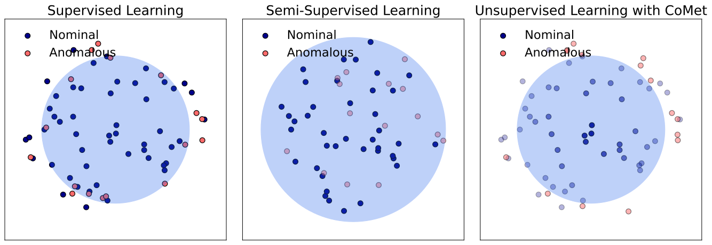
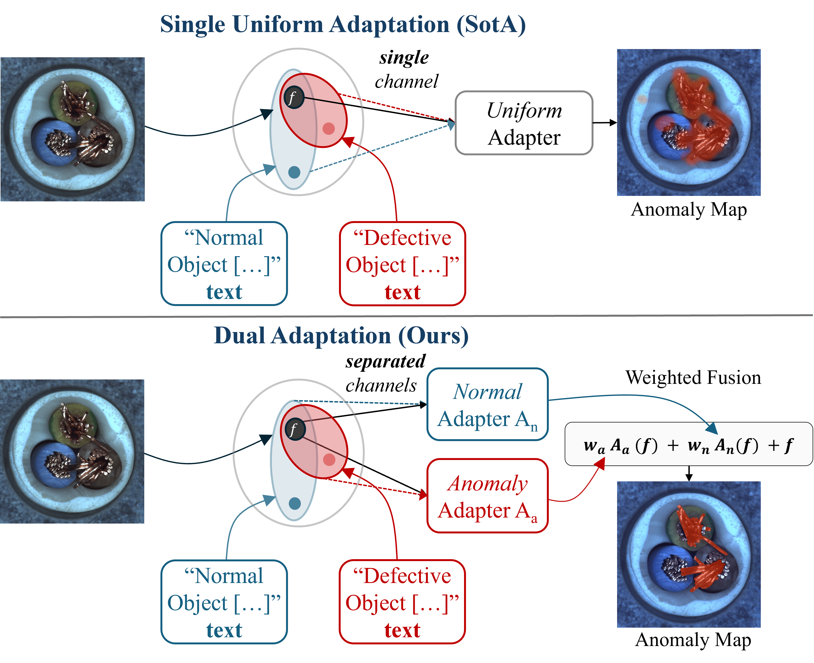
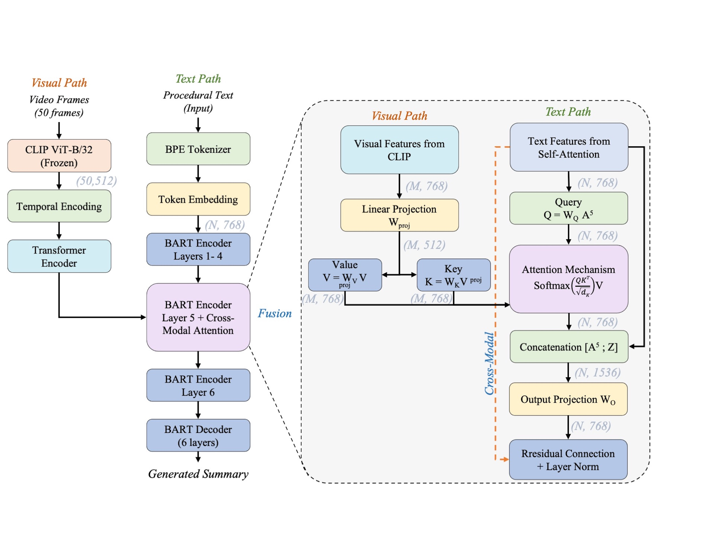
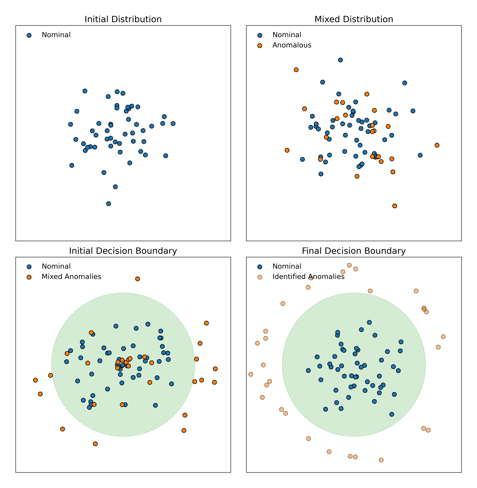
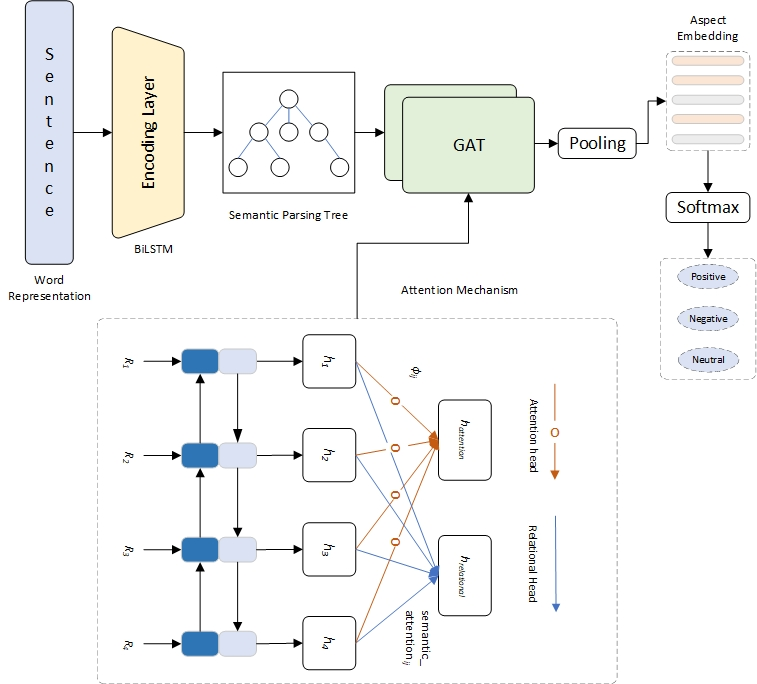

Muhammad Aqeel
Open to collaborations and positions
Postdoctoral Research Fellow
Department of Engineering for Innovation Medicine · University of Verona, Italy
Anomaly detection·Unsupervised learning·Vision-language models·Generative models
Download CVMy research addresses visual anomaly detection in industrial settings where defective samples are scarce or unavailable. I work on unsupervised anomaly detection, where only normal samples are available for training, and on zero-shot and generalist anomaly detection, where anomalies must be detected in object categories not seen during training. I approach these problems from three directions: confident pseudo-labeling, which stabilizes self-training under distribution shift, allowing the detector to refine what it treats as normal without manual relabeling; vision-language adapters, which adapt foundation-model representations to learn a category-agnostic notion of normality that generalizes across object categories; and diffusion-based defect synthesis, which leverages pre-trained diffusion models to generate realistic anomalous samples for data augmentation when real defects cannot be collected.
A second line extends these methods to medical image analysis, where abnormal samples are equally scarce and missed detections carry higher cost. In this domain, I use text-guided diffusion augmentation and representation transfer to detect abnormalities in biomedical images despite limited annotated data.
I completed my PhD at the University of Verona with Francesco Setti and Marco Cristani, and my Master's at the Beijing University of Posts and Telecommunications with Xiaohong Liu.
News
Selected publications




Robust Anomaly Detection in Industrial Environments via Meta-Learning
ICCV 2025 Workshops (Oral)·PDF

Semantic Parsing for Aspect-Based Sentiment Analysis
IEEE Access 2025·PDF
Publications
See also Google Scholar for citation metrics.
2026
2025
Semantic Parsing for Aspect-Based Sentiment Analysis
A Contrastive Learning-Guided Confident Meta-learning for Zero Shot Anomaly Detection
Robust Anomaly Detection in Industrial Environments via Meta-Learning
Diffusion-Based Data Augmentation for Medical Image Segmentation
RoadFusion: Latent Diffusion Model for Pavement Defect Detection
Latent Space Synergy: Text-Guided Data Augmentation for Direct Diffusion Biomedical Segmentation
Self-Supervised Iterative Refinement for Anomaly Detection in Industrial Quality Control
2024
Meta Learning-Driven Iterative Refinement for Robust Anomaly Detection in Industrial Inspection
Self-supervised Learning for Robust Surface Defect Detection
News
A timeline of recent updates, paper acceptances, talks, and milestones.
2026
2025
2024
2022
2019 - 2021
Grants
Funded research projects and scholarships.
PNRR PhD Scholarship
Italian Ministry of University and Research, via University of Verona
Role: PhD Fellow · National Recovery and Resilience Plan funding for doctoral research on industrial anomaly detection.
Mobility Research Grant
University of Ljubljana, Slovenia
Role: Visiting Researcher · Six-month research stay collaborating with Prof. Danijel Skočaj's group on zero-shot anomaly detection.
Chinese Government Scholarship (CSC)
China Scholarship Council, via Beijing University of Posts and Telecommunications
Role: Scholarship Recipient · Supported MSc research on natural language processing.
Career
Education
Ph.D. in Computer SciencePhD
Supervisors: Prof. Francesco Setti & Prof. Marco Cristani · Anomaly detection for industrial manufacturing
M.Sc. in Computer ScienceMSc
Beijing University of Posts and Telecommunications, China
Supervisor: Prof. Xiaohong Liu · Natural language processing and sentiment analysis
B.Sc. in Computer ScienceBSc
Experience
Postdoctoral Research FellowPostdoc
University of Verona, Italy
Visiting ResearcherVisiting
University of Ljubljana, Slovenia
Teaching AssistantTeaching
University of Verona, Italy
Computer Vision and Machine Learning, Department of Engineering for Innovation Medicine
Research AssistantResearch
Huazhong University of Science and Technology, Wuhan, China
Industry RolesIndustry
Pakistan
Software Quality Assurance Engineer at UIIT, Arid Agriculture University · Earlier, Software Developer at eConceptions (Pvt) Ltd.
Awards & honours
Certificate of Oral Presentation
Workshop on Computer Vision and Generative Models for Medical Imaging, ICIAP 2025, Rome, Italy
Academic service
Reviewer — journals
- IEEE Transactions on Multimedia since 2025
- IEEE Transactions on Industrial Informatics since 2026
- Computer Vision and Image Understanding since 2026
- Neural Computing and Applications since 2023
- Applied Soft Computing since 2023
- Array since 2026
- The Mesopotamian Journal of Computer Science since 2026
Reviewer — conferences
- International Joint Conference on Artificial Intelligence (IJCAI–ECAI) 2026
- British Machine Vision Conference (BMVC) 2026
- International Conference on Computer Vision Theory and Applications (VISAPP)
Student co-supervision
Master's students whose thesis work I have co-supervised.
- Navid Bakzadegan Tabrizi 2026
- Lokesh Kumar 2026
- Shakiba Sharifi 2025
- Farrukh Ullah 2024